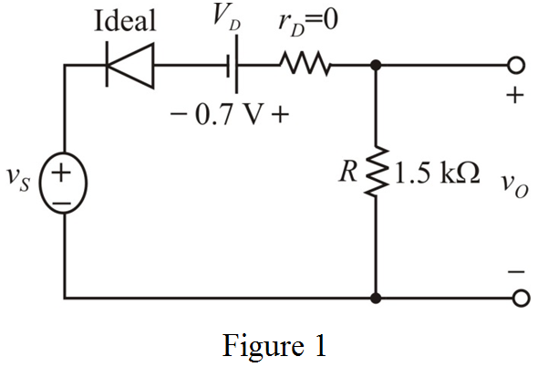
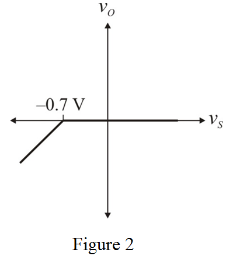
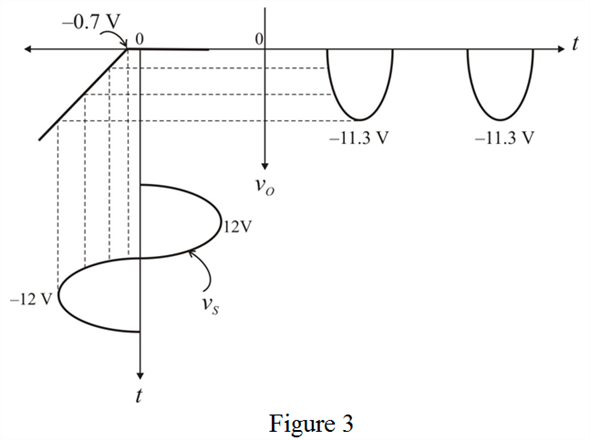

(a)
Diode is in ON condition in negative cycle when the input is more negative than  .
.
Apply Kirchhoff’s voltage law to the circuit shown in Figure1.
This output voltage is applicable for , and for .
Thus, the equation for output voltage is,
Refer to Figure 4.21 (a) in the textbook.
Draw the circuit diagram with notations.

(a)
Diode is in ON condition in negative cycle when the input is more negative than .
Apply Kirchhoff’s voltage law to the circuit shown in Figure1.
This output voltage is applicable for , and for .
Thus, the equation for output voltage is,
Draw the transfer characteristic curve.

(b)
Draw the input-output waveforms.

(c)
Output voltage is available in negative cycle and diode conducts.
Let us take input voltage as
Here,  is varying angle.
is varying angle.
Output voltage is available over a duration of  .
.
Here  is conduction angle gap between input and output in negative cycle.
is conduction angle gap between input and output in negative cycle.
Calculate the value of angle,  .
.
Calculate the average output voltage.
Simplify average output voltage,  further:
further:
Substitute for in .
Thus, the average output voltage,  is .
is .
(d)
The peak voltage across the output resistor is .
Calculate the value of peak current flowing through the diode.

Thus, the peak current in the diode,  is.
is.
(e)
Peak inverse voltage across the diode occurs when the diode is in OFF condition.
At this condition output voltage is zero.
Thus, the peak inverse voltage of the diode is, .